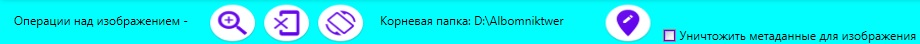

Программа "Комментарии к изображению" предназначена для сохранения метаданных в изображении. Файл содержащий метаданные должен иметь формат: jpg, jpeg, bmp, gif, png, tif. Файл может содержать несколько метаданных, которые должны принадлежать разным пользователям. Метаданные содержат путь где будет размещено файл для выбранного пользователя.
Программа имеет следующие режимы работы:
справка о программе;
режим выбора и перемещения файлов, с метаданными;
внесения, сохранения и удаления из выбранного файла метаданных. Для перехода в данный режим необходимо выделить изображение и выполнить двойной клик мышкой или выбрать команду контекстного меню "Изменить положение (Metadata)".
Меню режима - выбор и перемещение файлов
Команды меню (слева направо):
- информация об авторе;
- выбор папке, содержащей изображения
- масштаб показа эскиза изображения
- перемещение изображения по метаданных;
(перемещения выбранного изображения осуществляется командой контекстного меню)
- режим “Справка о программе”.
Меню режима - внесение, сохранение и удаление метаданных

Команды меню (слева направо):
- увеличение изображения (масштаб 200%);
- показ оригинального изображения
- поворот изображения по часовой стрелке;
- запись метаданных к изображению;
- удаление метаданных в изображении.